Palmetto ZBB Suite 2.0
User Guide
A step-by-step guide to zero-based budget review using the Palmetto ZBB Suite — illustrated with the Department of Administration as a complete case study.
Contents
Introduction — What Is Zero-Based Budgeting?
Traditional budgeting asks: "What did you spend last year? Add some percent for growth." Zero-based budgeting (ZBB) asks a harder question: "If this agency didn't exist today, what would we fund — and why?"
Every dollar must be justified from zero. Programs are ranked by priority. Lawmakers see exactly what they're buying, not just what they've always bought.
The Palmetto ZBB Suite makes this process practical for South Carolina's $39.2 billion budget across 115 agencies. Every line item in the tool is sourced verbatim from H.4025 (the FY 2025–2026 Appropriations Act). No figures are estimated or approximated — every number carries a source citation.
Who Should Use This Guide
- Legislative analysts conducting zero-based budget reviews
- Subcommittee staff preparing agency hearings
- Policy researchers evaluating spending priorities
- Agency budget officers reviewing their own submissions
- Anyone new to the tool who wants a hands-on walkthrough
What This Guide Covers
We'll walk through every function of the Palmetto ZBB Suite using the SC Department of Administration as our example agency — from locating it on the treemap all the way through building a zero-based budget and preparing a committee presentation.
App Overview — Finding Your Way Around
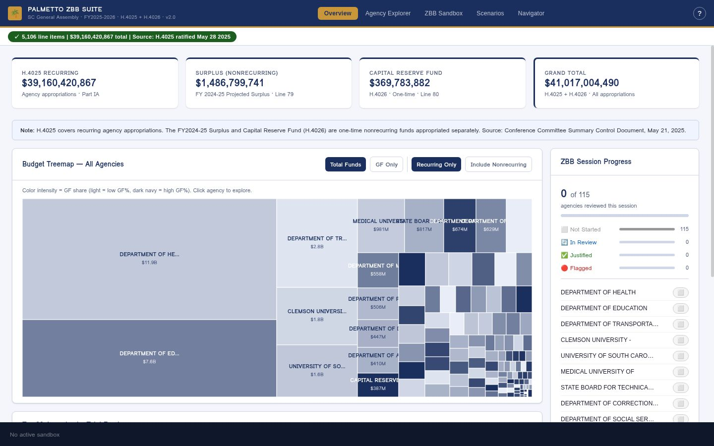
Fig. 1 — The Palmetto ZBB Suite home screen
Budget Totals at a Glance
Just below the navigation bar, four summary cards anchor every screen to the verified totals for the year.
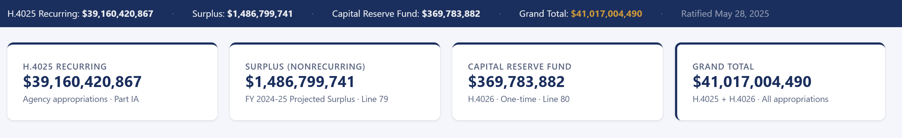
Fig. 2 — Four verified totals sourced from the Conference Committee Summary Control Document
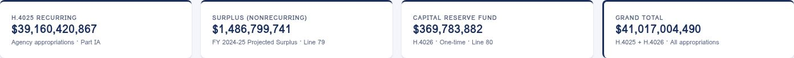
Fig. 3 — Stat cards close-up — the four verified totals at a glance
The Navigation Bar
The dark navy bar across the top is your control center. It stays visible on every screen.
| Element | What It Does |
|---|---|
| 🌴 Palmetto ZBB Suite wordmark | Branding; shows the fiscal year and bill number (H.4025) |
| Overview Agency Explorer ZBB Sandbox Scenarios Navigator | The five main modules. Click any tab to switch. The active tab is highlighted in gold. |
| ? | Opens the in-app User Guide modal. Also triggered by pressing ? on your keyboard. |
| ✓ 5,106 line items · $39.16B · H.4025 | The Data Integrity Badge. Green = all figures reconciled. Click it to see the full reconciliation report by agency. |
The Five Modules at a Glance
agencies
& provisos
zero
options
questions
Case Study: Department of Administration
The SC Department of Administration (DOA) is a central services agency that provides facilities management, human resources, procurement, and technology services to other state agencies. It makes an ideal training example because it has:
- Multiple fund types (General Fund plus Other Funds)
- A mix of mandated functions and discretionary programs
- Several Part IB provisos governing specific spending
- Clear federal compliance dimensions
Step 1 · Overview Tab — Find the Agency
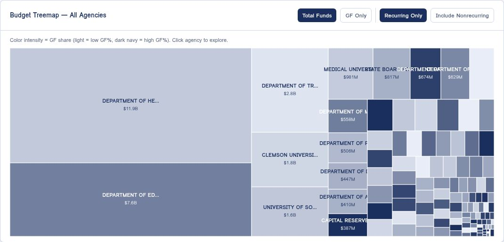
Fig. 4 — The Overview treemap (Total Funds / Recurring view). Larger boxes = larger budgets. Darker boxes = higher General Fund dependency.
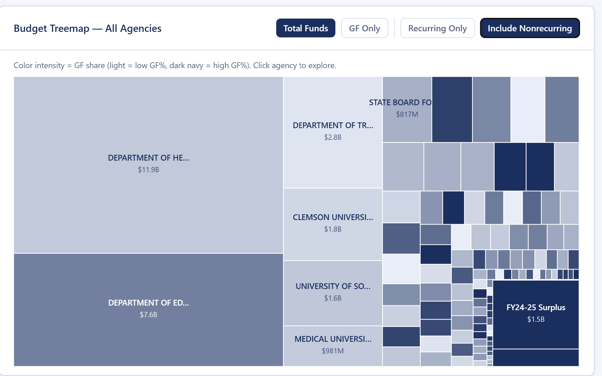
Fig. 5 — Treemap with nonrecurring funds included. Agencies with one-time capital allocations expand visibly.
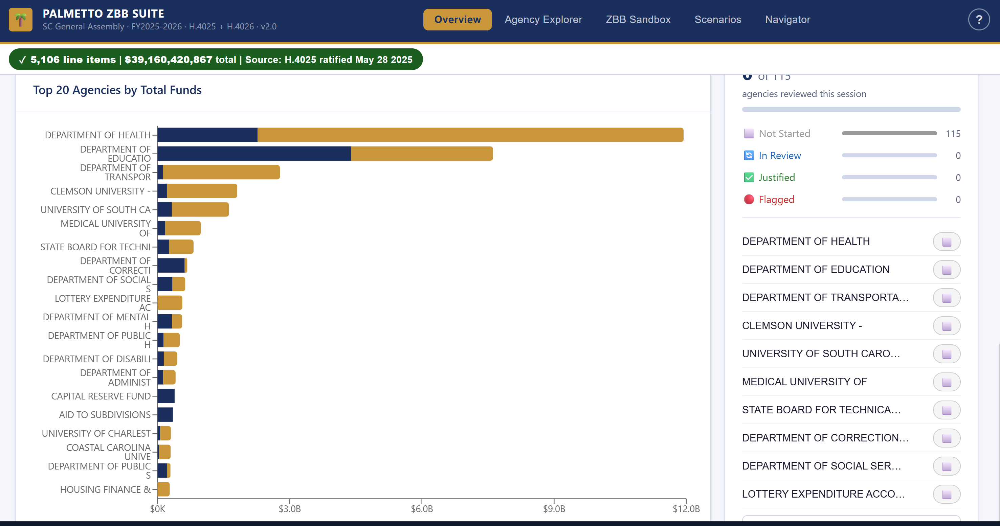
Fig. 6 — Top 20 agencies by appropriation. Navy = General Fund; gold = Other Funds (federal + fees).
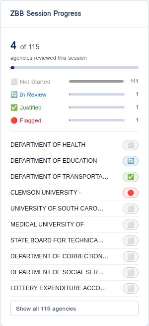
Fig. 7 — ZBB Session Progress panel. Four status states shown; tracks multi-agency review progress in real time.
Step 2 · Agency Explorer — Read the Numbers
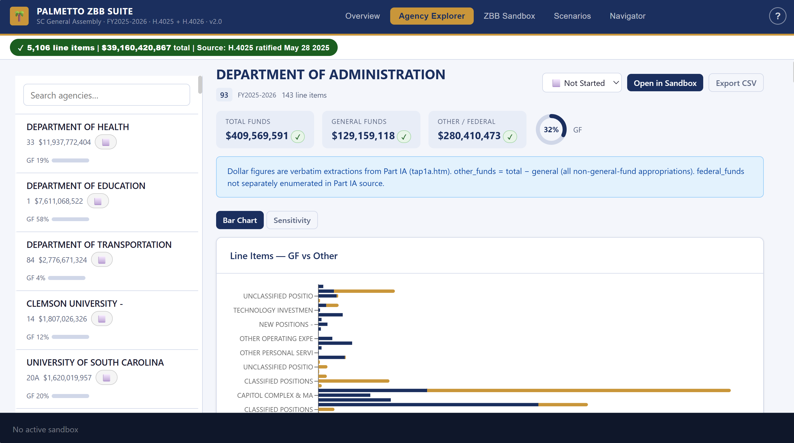
Fig. 8 — Agency Explorer with Department of Administration (§93, $409,569,591) loaded
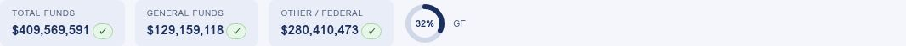
Fig. 9 — Agency stat cards for DOA. Total $409M / GF $129M / Other $280M. Each figure carries a ✓ citation badge.
The Two-Panel Layout
Agency Explorer is split into two panels:
- Left panel — scrollable list of all 115 agencies. Search box at top. Click any agency to load it.
- Right panel — all line items for the selected agency, plus proviso text and review status controls.
- Program / Object — the specific budget line (e.g., Personal Service, Contractual Services, Equipment)
- Fund type — General Fund (GF), Federal (Fed), or Other Funds
- Amount — the exact dollar figure from H.4025
- Citation badge — ✓ Verified confirms the number is sourced directly from the bill
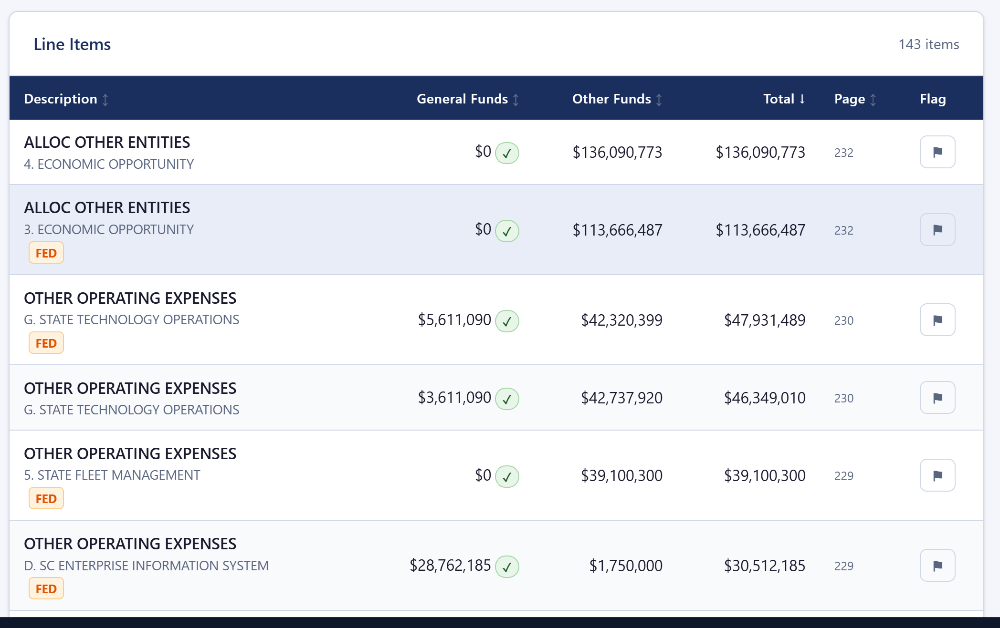
Fig. 10 — DOA line items table. FED badges flag federal match lines; every figure links to its source page in H.4025.
- The ✦ AI Suggest button in the Sandbox retrieves the most relevant Part IB proviso text for a specific line item and drafts a justification from it.
- The Navigator tab lets you ask plain-English questions across the full Part IB corpus — ideal for cross-agency policy questions or confirming restrictions before zeroing a line.
- Filter by fund type (GF only, Federal only, Other only) to isolate General Fund exposure
- Sort by amount — largest line items first — to focus your review on the biggest dollars
| Status | Meaning |
|---|---|
| Not Started | Agency has not been opened yet |
| In Review | Currently being analyzed |
| Justified | ZBB complete, budget justified |
| Flagged | Needs further review or has concerns |
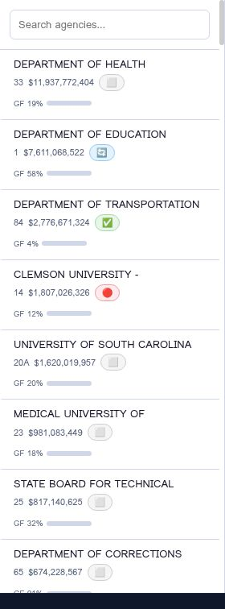
Fig. 11 — Status badges in the agency list. Mark progress as your team works through each agency.
Step 3 · ZBB Sandbox — Build from Zero

Fig. 12 — ZBB Sandbox loaded with Department of Administration (§93, $409,569,591)
Loading the Agency
Fig. 13 — Running totals sidebar after a 10% bulk cut on DOA. Tracks Current vs. Proposed in real time; variance turns red when below original.
Zeroing Out and Rebuilding
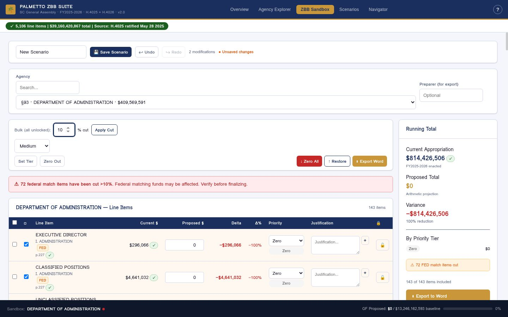
Fig. 14 — After ↓ Zero All. Every DOA line starts at $0. Use Undo to reverse.
- Should this be funded? If no, leave it at $0.
- At what amount? Enter the justified dollar figure. It can equal, exceed, or be less than the original appropriation.
- At what priority? Select a tier:
| Tier | Definition | Example |
|---|---|---|
| Mandated | Legally required — state or federal law | Constitutional officer salaries, federally required match |
| High | Critical to core mission | Facilities maintenance, procurement systems |
| Medium | Important but deferrable | Training programs, equipment upgrades |
| Low | Beneficial but not essential | Studies, conferences, subscriptions |
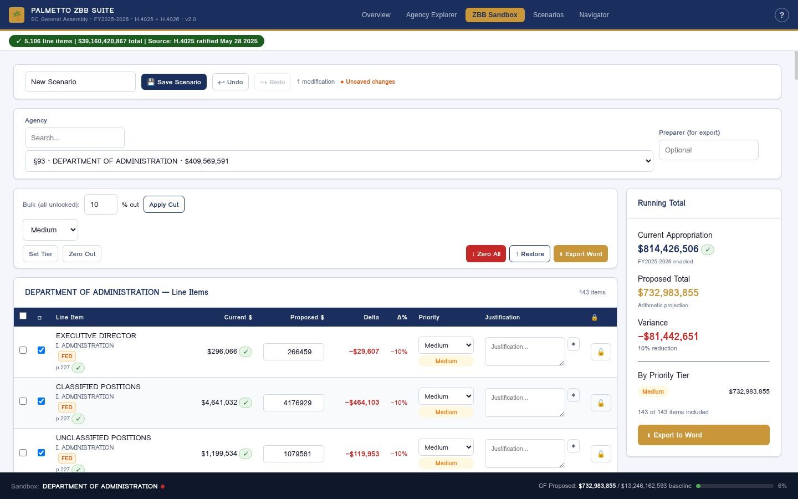
Fig. 15 — Rebuilding line by line. First three DOA rows assigned priority tiers and justifications; remaining rows still at $0.
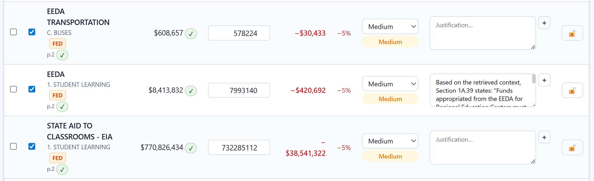
Fig. 16 — AI Suggest retrieves the matching Part IB proviso text (here: Section 93 D500, Proviso 93.11). Always review and edit before saving.
Bulk Operations
- Set a priority tier across all selected rows
- Apply a percentage reduction to all selected amounts
- Zero out or restore all selected rows at once
Saving Your Work
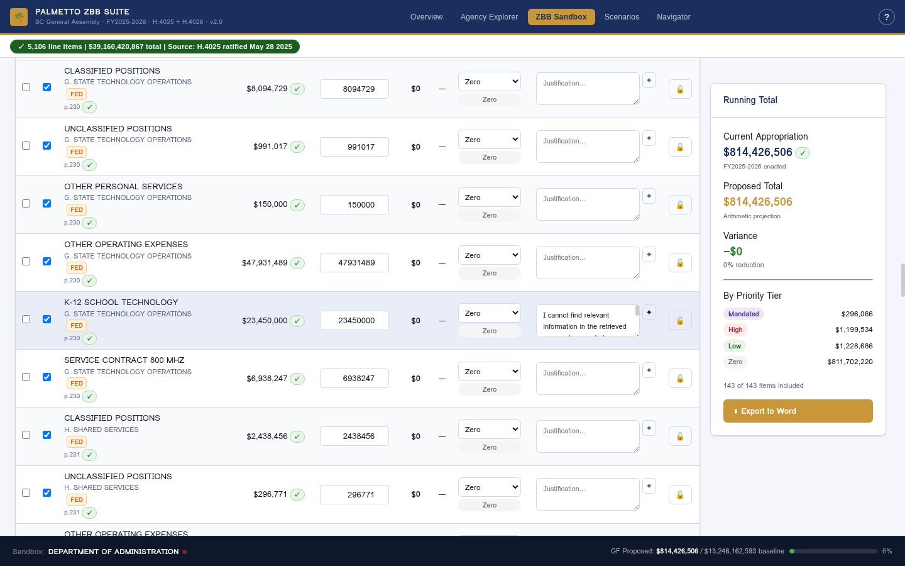
Fig. 17 — Saving a named DOA scenario. The name appears in the Scenarios tab for comparison.
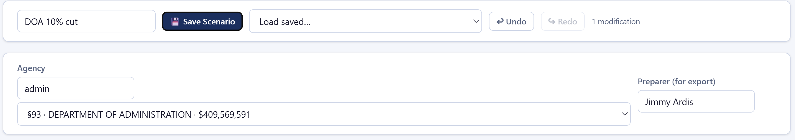
Fig. 18 — Export Word with Preparer field. The output is a formatted decision package ready for subcommittee distribution.
Step 4 · Scenarios — Compare and Present
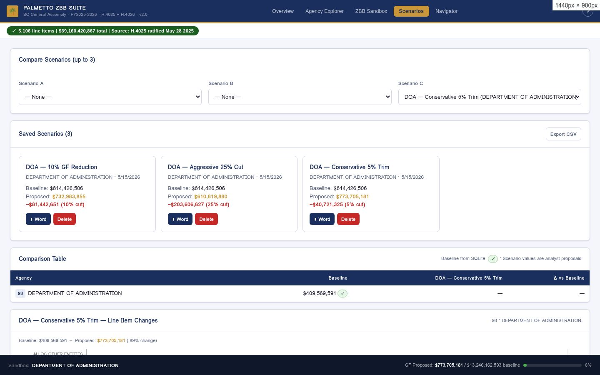
Fig. 19 — Scenario selector. Pick up to three saved scenarios to compare simultaneously.
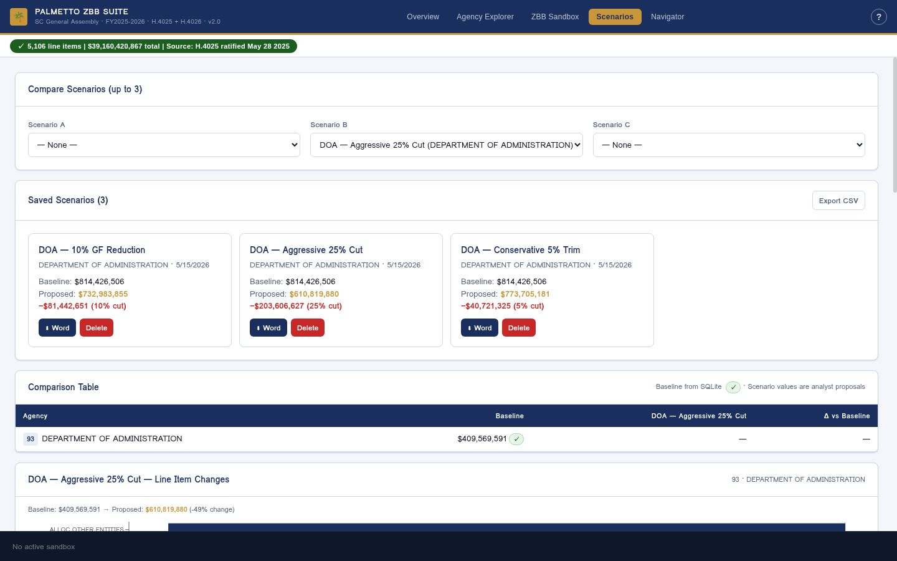
Fig. 20 — Saved scenario cards for DOA. Click any card to load it into the comparison view.
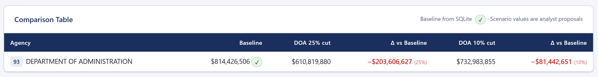
Fig. 21 — Comparison table. Three DOA scenarios side by side with delta columns for every line item.
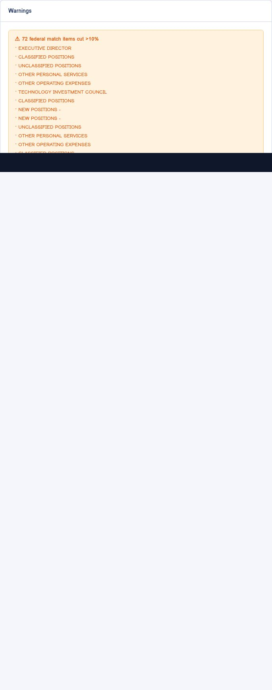
Fig. 22 — Warnings panel. 72 DOA federal match items flagged at risk under the Aggressive 25% Cut scenario. The true cost of GF reductions is shown.
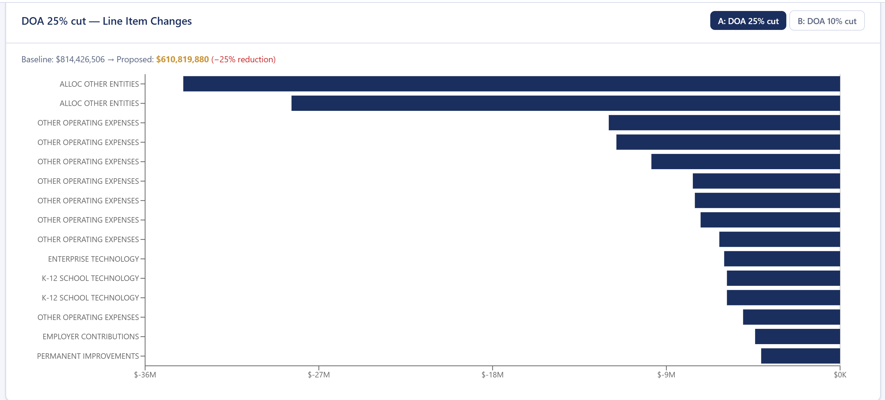
Fig. 23 — Waterfall chart (Scenarios tab, scroll down past the comparison table). Line-item cuts shown left to right; largest reductions at the bottom.
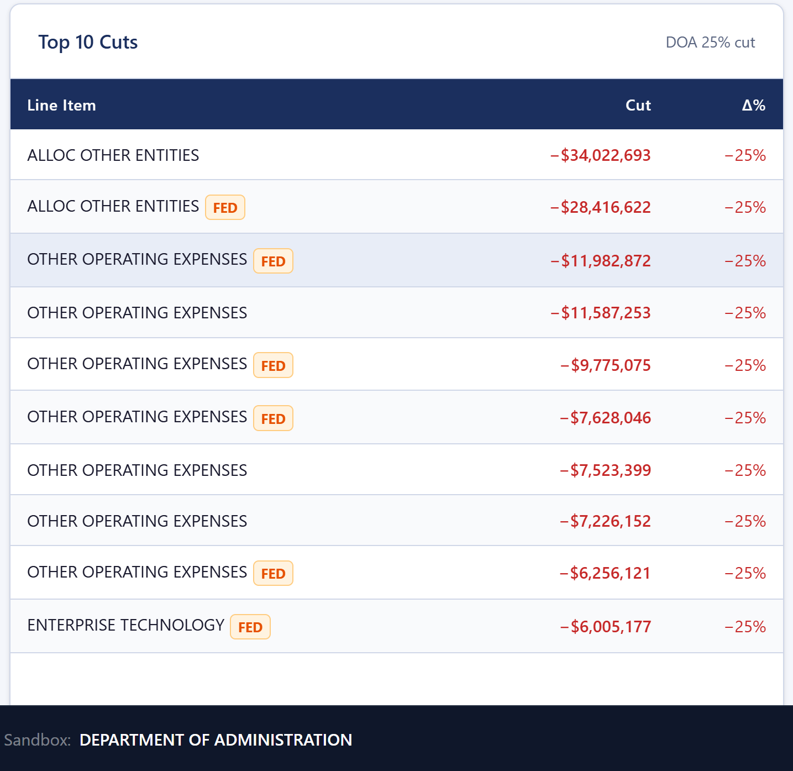
Fig. 24 — Top 10 Cuts (Scenarios tab, scroll below the waterfall chart). Largest reductions at a glance — verify these are intentional before exporting.
- Export CSV — raw comparison data for further analysis in Excel or Google Sheets
- Export Word — formatted committee packet, one page per agency with scenario comparison and priority breakdown
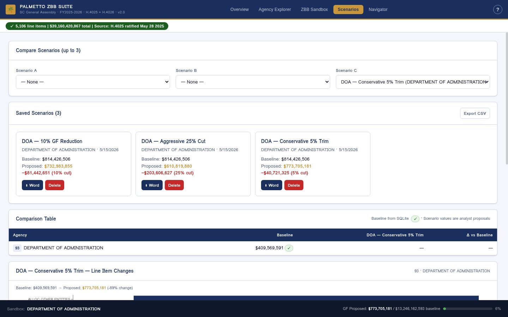
Fig. 25 — Export options. Export CSV (top right) for data analysis; per-scenario Export Word for committee packets.
?present=true to the app URL to strip the navigation bar and display
the Scenarios tab in large-format view — optimized for a projector or large monitor.
Step 5 · Navigator — Research Provisos
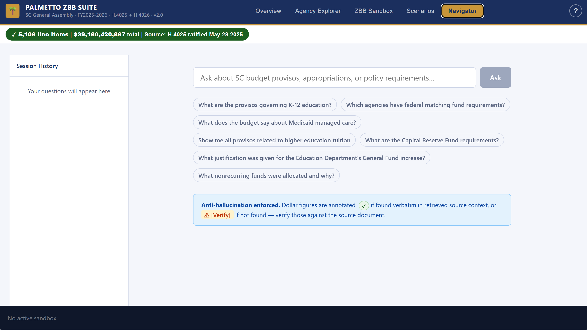
Fig. 26 — Navigator input field. Type any plain-English question about the budget or provisos.
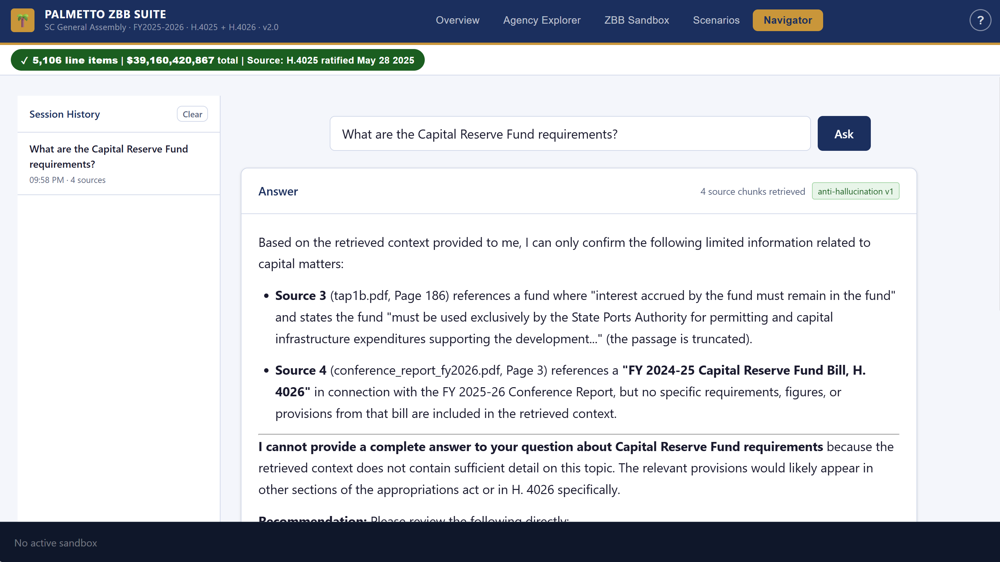
Fig. 27 — Navigator answer with citations. Green ✓ markers confirm verbatim proviso text; source documents are listed below.
- "What provisos govern the Department of Administration?"
- "What restrictions apply to procurement in state agencies?"
- "Which agencies have provisos related to real property management?"
- "What does the budget say about state employee benefits?"
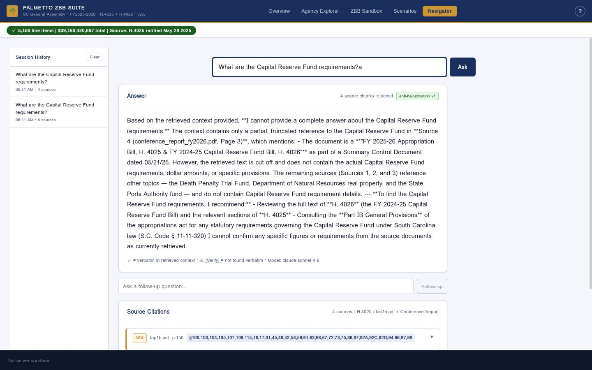
Fig. 28 — Navigator session history. Past questions stay in the panel for the session — click any to reload the answer.
Data Integrity — How to Know You Can Trust the Numbers
Every dollar figure in the Palmetto ZBB Suite is extracted verbatim from H.4025 — the FY 2025–2026 Appropriations Act ratified May 28, 2025. The green badge in the navigation bar is your live confirmation.
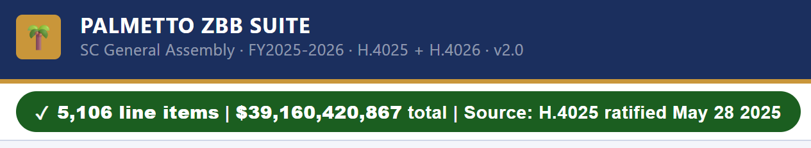
Fig. 29 — The Data Integrity Badge. Green = all 5,106 line items reconciled against H.4025. Click it for the full agency-by-agency reconciliation report.
Click the badge at any time to open the full reconciliation report — a per-agency breakdown confirming that the database totals match the recapitulation tables in the enrolled bill. The AI (Navigator and Sandbox Suggest) is prohibited from generating or approximating any dollar figure. If the answer isn't in the source documents, the tool says so.
Tips, Shortcuts & Best Practices
Keyboard Shortcuts
| Key | Action |
|---|---|
| ? | Open / close the User Guide modal |
| Ctrl + Z | Undo last Sandbox change |
| Ctrl + Y | Redo last Sandbox change |
Recommended ZBB Workflow
- Start in Overview — get the full picture before diving into one agency.
- Pick agencies by risk — sort by General Fund total to prioritize agencies with the most GF exposure.
- Always read provisos first — use Agency Explorer and Navigator to understand legal constraints before zeroing anything.
- Mark status as you go — use the In Review / Justified / Flagged system so your team knows where things stand.
- Save multiple scenarios — a "Mandated Only" and a "Realistic Cut" scenario per agency gives the committee real choices.
- Check federal match before cutting — always filter for FED MATCH lines and calculate the true cost of a GF reduction.
Team Use
Data Integrity — What You Can Trust
Every dollar figure in the Palmetto ZBB Suite is extracted verbatim from H.4025 — the enrolled Appropriations Act ratified May 28, 2025. The green badge in the top right confirms that 5,106 line items totaling $39,160,420,867 are reconciled across all 115 agencies.
The AI (Navigator) is prohibited from generating or approximating any dollar figure. If the answer isn't in the bill, the tool says so.
Glossary
| Term | Definition |
|---|---|
| Appropriation | The amount of money the General Assembly authorizes an agency to spend in a fiscal year, as specified in H.4025. |
| General Fund (GF) | State tax revenue — primarily income and sales taxes. The fund the legislature has the most control over. |
| Other Funds | Fees, fines, and other non-tax revenue generated by the agency itself (e.g., licensing fees, user charges). |
| Federal Funds | Money from the federal government, often requiring a state match. Cutting the GF match can forfeit federal dollars at a multiple ratio. |
| Part IA | The numeric section of H.4025 — lists every line item appropriation for every agency. |
| Part IB (Proviso) | The policy rider section of H.4025 — legal language governing how appropriated funds may be spent, transferred, or reported. |
| Zero-Based Budget (ZBB) | A budgeting method where every dollar must be justified from zero each year, rather than carrying forward prior-year levels by default. |
| Priority Tier | A classification — Mandated, High, Medium, or Low — assigned to each line item in the Sandbox to indicate its importance to the agency mission. |
| Federal Match | A state General Fund expenditure required to "unlock" a larger federal grant or entitlement (e.g., Medicaid FMAP). Cutting the GF match forfeits the federal share. |
| Reconciliation | The process of verifying that the sum of all line items in the database matches the recapitulation (recap) totals from H.4025. The green badge = reconciled. |
| Scenario | A saved version of a ZBB build — e.g., "DOA — 5% GF Reduction." Multiple scenarios can be compared side by side in the Scenarios tab. |
| Decision Package | The exported Word document containing an agency's ZBB analysis — line items, justified amounts, priority tiers, and justification narratives. |
| H.4025 | The South Carolina General Appropriations Act for FY 2025–2026, ratified May 28, 2025. The sole data source for all figures in the Suite. |
All figures sourced verbatim from the enrolled Appropriations Act. The AI is prohibited from generating or approximating any figure.